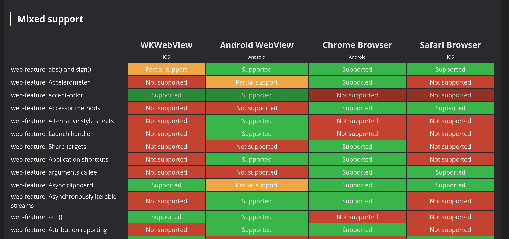

class: center, middle # State of WebViews - Can we fix things? ## Niklas Merz #### W3C WebView Community Group & Apache Cordova --- # Agenda 1. What is a WebView? 1. Why do I care about WebViews 1. Why you should care about WebViews 1. The State of WebViews 1. Documentation and Tooling 1. Testing the new contender - Servo in Apache Cordova 1. The future: AI? Mini apps? 1. Q&A ??? --- # What is a WebView? [W3C WebView Community Group](https://www.w3.org/community/webview/) > Software components that are used to render Web technology-based content outside of a Web browser (Native Apps, MiniApps, etc). [User Agent finding from W3C TAG](https://w3ctag.github.io/user-agents/#ua-as-software) > As software components, user agents can be parts of larger applications and can call libraries that implement the web platform or parts of it. ??? * Embedding of web content in native apps * There is a WebView Community Group at W3C * Long discussion on specifics * Maybe we should pick it up again --- # Why do I care about WebViews? * App developer * Cordova Hacker * Cordova Maintainer * WebView Community Group Member * WebView Community Group Chair ??? * Got in touch with WebViews many years ago * Got to solve some interesting problems with them * They never let me go * Some opportunities to improve them came up --- # Why you should care about WebViews > WebViews are more than just a bridge between native and web—they are a critical component of many digital user experiences today. https://blog.merzlabs.com/posts/care-about-webviews/ ??? * Easily used without noticing * Exposed to security risks * In app browsing * Mini apps --- # State of WebViews * Mobile WebViews * Android WebView, iOS WKWebView and more * **Mini apps** * Hybrid apps: Apache Cordova, Capacitor etc. * Desktop WebViews * Microsoft Edge WebView2 * macOS WKWebView * Linux WebViews (WebKitGTK, QtWebEngine) * Electron, Tauri * ...more embedding of the web --- # Pain points for developers * Inconsistent support for web features * Platform-specific APIs that basically do the same thing differently * Loading files -> `file://` vs. custom schemes vs WebViewAssetLoader * Cookie handling * Permissions ??? * Reason for forming the CG --- # Custom scheme vs Asset handler ### Special Origins You can't use file:// these days, right? --- ### Android WebViewAssetLoader - Register domains - https://appassets.androidplatform.net/ - https://mydomain.com - Intercept GET & path ### iOS WKURLSchemeHandler - Register custom URL schemes, e.g. app:// - myapp://appcontent - Intercept GET & POST --- # Documentation and Tooling * Baseline, web-features * Browser compat data (BCD) * [caniwebview.com/baseline](https://caniwebview.com/baseline) * Testing Apps -> [caniwebview.com/apps](https://caniwebview.com/apps) ??? * web-features earlier today --- # A clear picture? <p></p> ??? * Looking at web feautures helps us get a picture of where issues are * BCD data is too granualar * Once we have good data we can start working with vendors and having disucssions * Great help from Google team on baseline and openwebdocs --- # Servo - The new contender > Servo aims to empower developers with a lightweight, high-performance alternative for embedding web technologies in applications. ??? * Started by Mozilla * Now at the Linux Foundation * Turbulent history but gaining more traction recently * **Focus on embedding makes it perfect for WebViews** --- # Testing Servo in Apache Cordova * Servo is easy to add to an Android app! * ServoView lacks features other WebViews have * Custom scheme or asset loader * Evaluate JavaScript * Cookie store ??? * Thanks to some funding and guidance from NGI Mobifree fund by NLnet I was able to add Servo as WebView option to Apache Cordova Android. * Got to work on bringing Servo to Cordova * Cordova back in the day had Crosswalk --- # The Future of WebViews **Fixing WebViews, improves more than you think** * WebViews used in a browsing context * Mini apps * AI-powered apps? ??? * AI is everywhere these days * Not sure if it stays * **Similar way of bridging native and web but AI with the Web?** --- # Can we fix things? * It's hard & complex * Big vendors show little interest * Being independent is an interesting position * **Documentation, tooling and alternatives** * Standards are far away ??? * Documentation, tooling and alternatives are a good start to show whats possible * Join the W3C WebView Community Group --- # We need help! * Reporting issues * Writing behavioral docs * Building WebView APIs for Servo --- class: center, middle # Q&A? --- .left-column[ ## Thanks! ] .right-column[ This presentation: https://niklas.merz.dev/state-of-webviews ]